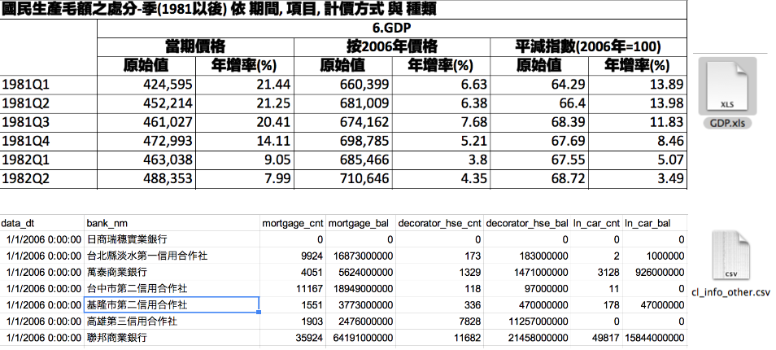
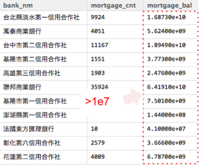
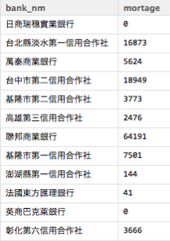

房價真的太高了嗎?
ETL on R
Cheng Yu Lin (aha) and Jia Wei Chen (jiawei)
故事的起源
故事的起源
- 房價真的太高了嗎?
大熊被抓了

故事的起源
- 房價真的太高了嗎?
- 大熊被抓了
台灣房市真的要崩盤了嗎？

在論述台灣房市之前，身為一個
資料科學家，第一步是了解問題
本次，我們的問題是
房價真的太高了嗎?
還記得這個新聞吧？ 就從這裡開始
資料在哪裡
從上面新聞所述，所以我們想要:
資料在哪裡
從上面新聞所述，所以我們想要:
你想知道什麼資料?
- GDP
- 房貸餘額
- 股價
- 新聞
- 地價資訊
資料在哪裡
從上面新聞所述，所以我們想要:
你想知道什麼資料?
- GDP
- 房貸餘額
- 股價
- 新聞
- 地價資訊
可能的來源?
- 政府公開資料
- 主計處
- 央行
- 新聞
- 紙本報紙
- 電視新聞
- 電子新聞
- 股市
- Yahoo Stock API
即便知道資料在哪，可是資料還是如同
一盤散沙
看看Raw Data

我們ETL會用到的有
dplyr可用類似SQL方法操作data fromexts處理時間格式好用的套件gdata可以處理Excel 2007以上的文件quantmod可以處理股市資料stringr字串相關處理
來上課的，有
福了
DSC的One Piece
DSC2014TutorialR社群為了這次Tutorial製作的套件，所有的教材都在這了
deps <- available.packages("http://54.92.61.128/R")[1,"Depends"]
pkgs <- strsplit(gsub("\\s", "", deps), ",")[[1]]
for(pkg in pkgs) {
install.packages(pkg)
}
install.packages('DSC2014Tutorial', repo = 'http://54.92.61.128/R', type = 'source')
安裝之後, 輸入以下指令就可以打開投影片:
slides("ETL")
解決資料散亂的方法 - ETL

ETL 的主要內容

今日解決的問題流程 - ETL

今日課程的目標
學會extraction, cleaning, transformation
- 用R整理
結構化資料 STEP1 房貸餘額1 , STEP2 GDP - 用R整理
非結構化資料 STEP3新聞分析
學會 load
- 整併全部的資料 STEP4
邁向 其他有意思的主題
學習，實作，觀察 STEP1
ETL 第一步
開始收集資料(房貸餘額)
請連線到
https://survey.banking.gov.tw/statis/stmain.jsp?sys=100&funid=r100
開始收集資料
房貸餘額,直接下載現成的csv檔案
- 直接到https://raw.githubusercontent.com/ntuaha/TWFS/master/db/cl_info_other.csv下載檔案
- 應該會看見
cl_info_other.csv - 讀入它!
或是
library(DSC2014Tutorial)
ETL_file("cl_info_other.csv")
讀入資料 - read.table
至少要記得的 read.table
Cl_info = read.table(file='檔案路徑',sep=",",stringsAsFactors=F,header=T)
- 輸出形態為
Data Frame - file 就是指讀入的檔案路徑
- sep 指的是欄位分割用的符號,通常csv檔案格式是透過
,做分割 - stringsAsFactors 預設是
True, 會讓讀入的字串都用Factor形態儲存，那麼資料就會轉為整數儲存與額外的對照表 - header 預設是
False，表示第一行是不是表格標頭，作為輸出的dataframe欄位名的colnames
看看讀入結果
View(Cl_info)
str(Cl_info)

直接讀入是否覺得怪怪的?
再看一次
etl_dtdata_dt是文字但應該是時間bank_code也是文字但應該是factor
Transformation - 資料處理
將資料讀入
library(DSC2014Tutorial)
Cl_info = read.table(file=ETL_file('cl_info_other.csv'),header=T,sep=",",stringsAsFactors=F)
Cl_info_part = mutate(Cl_info,data_dt = as.POSIXct(data_dt),
bank_code = as.factor(bank_code),etl_dt = as.POSIXct(etl_dt))
View(Cl_info_part)
str(Cl_info_part)
- 到這裡已經完成第一次的資料
Extraction與Transformation了！
看見資料了!但是剛剛處理過程中的
mutate是什麼?
看見資料了!但是剛剛處理過程中的
mutate是什麼?
在
R中用來做資料清理與資料處理好用的套件dplyr其中之一的函式
接下來我們將介紹三個基本函式

練習-挑選欄位(1/2)
dplyr select 函式，用來挑選欄位
Cl_demo1 = select(資料表,欄位1,欄位2,欄位3)
第一個參數為輸入的data frame後續參數為選取的欄位名稱
給熟悉SQL的使用者
select data_dt,bank_nm,mortgage_bal from Cl_info;

練習-挑選欄位(2/2)
dplyr select 函式，用來挑選欄位
Cl_demo1 = select(Cl_info,data_dt,bank_nm,mortgage_bal)
第一個參數為輸入的data frame後續參數為選取的欄位名稱
給熟悉SQL的使用者
select data_dt,bank_nm,mortgage_bal from Cl_info;
練習-挑選資料
dplyr filter 函式，用來保留要留下的資料列
Cl_demo2 = filter(Cl_info,mortgage_bal>1000000)
第一個參數為輸入的data frame第二個參數為邏輯運算式，可用data frame裡的欄位，當結果為True時，該筆資料列保留
給熟悉SQL的使用者
select * from Cl_info where mortgage>1000000;

練習-增加特徵欄位(1/2)
dplyr mutate 用來增加非彙總計算欄位
Cl_demo3 = mutate(資料表,新欄位名 = 運算式)
第一個參數為輸入的 data frame第二參數為計算式，也可以用來當做轉換資料形態，變更欄位為名稱使用
- 例如: bank_code = as.numeric(bank_code)
給熟悉SQL的使用者
select mortgage_bal/1000000 as mortage from Cl_info;

練習-增加特徵欄位(2/2)
dplyr mutate 用來增加非彙總計算欄位
Cl_demo3 = mutate(Cl_info,mortage = mortgage_bal/1000000)
第一個參數為輸入的 data frame第二參數為計算式，也可以用來當做轉換資料形態，變更欄位為名稱使用
給熟悉SQL的使用者
select mmortgage_bal/1000000 as mortage from Cl_info;
練習-排序資料(1/2)
dplyr arrange 用來重新排序
Cl_demo4 = arrange(資料表,欄位1,desc(欄位2)))
第一個參數為輸入的 data frame後續參數為排序用欄位，預設遞增，可以透過desc()變成遞減排序
給熟悉SQL的使用者
select * from Cl_info order by mortage,data_dt desc ;

練習-排序資料(2/2)
dplyr arrange 用來重新排序
Cl_demo4 = arrange(Cl_info,mortgage_bal,desc(data_dt))
- 輸出data frame
第一個參數為輸入的 data frame後續參數為排序用欄位，預設遞增，可以透過desc()變成遞減排序
給熟悉SQL的使用者
select * from Cl_info order by mortage,data_dt desc ;
練習時間
- 請幫忙從Cl_info_part找出
data_dt,bank_nm,mortgage_bal - 請幫忙從Cl_info_part挑選出
mortgage＿bal大於1千萬的銀行資料 - 請幫忙排序Cl_info_part出
mortgage＿bal由小到大，但資料時間data_dt從大到小 - 請執行下面程式碼，我們後續會利用
Cl_info_part2
Cl_info_part2 = mutate(Cl_info_part,time= as.POSIXct(data_dt))
學習，實作，觀察 STEP2
讓我們來練習抓下一個資料
GDP
ETL 第二步
開始收集資料(GDP)
請連線到 http://ebas1.ebas.gov.tw/pxweb/Dialog/NI.asp
開始收集資料(GDP)
- GDP從直接下載
國民生產毛額之處分 - 季(1980之後）
- 選全部的日期
- 選全部的計價方式
- 項目選GDP
- 總類選原始值
- 按繼續後，選從螢幕顯示Excel檔
- 開啟後，另存新檔成csv檔
- 開回
RStudio開始處理資料
或是ETL_file("GDP.txt")
練習讀入與創建一個
GDP的 data frame
答案
GDP = read.table(file=ETL_file("GDP.txt"),sep=",",stringsAsFactors=F,header=F)
輸入
View(GDP)觀察GDP會發現怎麼前後有很多列的資料是不要的
好亂，我想整理好這個data frome
資料清理
要處理的標的物有
- 去除前後
不相干的資料列 - 轉換欄位的格式
- 將單位轉換，從
百萬元變成元 - 將不應該出現的
,去除
- 將單位轉換，從
- 抽離
年份與季

去除前後不相干的資料列
GDP_part = GDP[5:137,]
別忘了改上欄位名稱
colnames(GDP_part) = c("time","GDP","GDP_yoy","GDP_2006","GDP_2006_yoy",
"GDP_minus","GDP_minus_yoy")

去除rownames
rownames(GDP_part) = NULL
View(GDP_part)
另外一個簡單的例子
iris
iris_part <- iris[4:6,]
rownames(iris_part) <- c('a','c','d')
View(iris_part)
轉移文字格式
# 去除中間不合理的,在數字欄位上與補上百萬
GDP_part2= mutate(GDP_part,GDP = as.numeric(gsub(",", "",GDP))*1000000)
- 我們利用了
gsub, 替換字元，將原先有問題的,去除 - 而後利用了
as.numeric將原來的文字形態改成數字

抽離年份與季
GDP_part3 = mutate(GDP_part2,year=as.numeric(substr(time,0,4)),
season=as.numeric(substr(time,6,6)))
GDP_part4 = select(GDP_part3,year,season,GDP)
- 我們利用了
substr, 取出特定位置的資料 - 再次利用
as.numeric, 將文字轉成數字

練習時間
- 去除頭尾不合理的資料列
- 去除GDP的
,, 然後將它轉成數字 - 將
year,season抽離出來並轉成數字，同時最後資料只保留GDP,year,season
擁有了
GDP和房貸餘額，那接下來呢?

非結構化的新聞與股市資料!
學習，實作，觀察 STEP3
ETL 第三步
匯入套件
require(RSelenium)
require(stringr)
require(xts)
require(reshape2)
打開 phantomjs
２２
開始抓 yahoo 新聞
title <- list()
for(i in 1:10){
url <- sprintf('https://tw.news.yahoo.com/real-estate/archive/%d.html', i)
remDr$navigate(url)
doc <- remDr$findElements("xpath", "//ul/li/div/div/h4/a")
tmp <- sapply(doc, function(doc){
doc$getElementText()})
title <- append(title, tmp)
}
讀寫表格資料
setwd('~/R_ETL/jiawei/)
doc <- do.call(rbind, title)
writeLines(doc, "news_yahoo.txt")
news_yahoo <- readLines('news_yahoo.txt')
匯入這次用的資料
鉅亨網 房地產新聞
setwd('~/R_ETL')
## Error: cannot change working directory
hourse_news <- readLines('jiawei/news.txt')
## Warning: incomplete final line found on 'jiawei/news.txt'
head(hourse_news)
## [1] "2014-06-24富邦人壽信義區再插旗 A25案172億元奪標"
## [2] "2014-06-24北市A25地上權案 富邦權利金172.88億元得標"
## [3] "2014-06-23房市管制 央行將化明為暗"
## [4] "2014-06-20史上頭一遭!大直新地王 1坪212萬＃超越信義之星直逼帝寶 中山新天價"
## [5] "2014-06-20大直帝景水花園實價首破200萬 北市3大豪宅板塊確立"
## [6] "2014-06-19樺福千金捷運宅標脫率89.4% 均價63萬元屬合理範圍"
抓出 時間 與 文章
dates <- str_extract(hourse_news, "\\d{4}-\\d{2}-\\d{2}")
titles <- str_replace(hourse_news, "\\d{4}-\\d{2}-\\d{2}", "")
hourse_news <- cbind(dates, titles)
## dates titles
## [1,] "2014-06-24" "富邦人壽信義區再插旗 A25案172億元奪標"
## [2,] "2014-06-24" "北市A25地上權案 富邦權利金172.88億元得標"
## [3,] "2014-06-23" "房市管制 央行將化明為暗"
有了新聞後，怎麼知道有哪些單字？
自己手動打？ex. 房價、北市,、捷運 ...
用程式從文章抓
有了新聞後，怎麼知道有哪些單字？
自己手動打？ex. 房價、北市,、捷運 ...
用程式從文章抓
substr('富邦人壽信義區再插旗 A25案172億元奪標', 1, 4)
## [1] "富邦人壽"
substr('富邦人壽信義區再插旗 A25案172億元奪標', 5, 7)
## [1] "信義區"
N-Grame
ngram <- function(sentence, n){
chunk <- c()
for(i in 1 : (nchar(sentence)-n+1)){
chunk <- append(chunk, substr(sentence, i, i+n-1))
}
return(chunk)
}
ngram('富邦人壽信義區再插旗', 2)
## [1] "富邦" "邦人" "人壽" "壽信" "信義" "義區" "區再" "再插" "插旗"
把 N-Gram 詞彙匯聚在一起
piece <- c()
for(i in 1:length(hourse_news)){
piece <- append(piece, ngram(titles[i], 1))
piece <- append(piece, ngram(titles[i], 2))
piece <- append(piece, ngram(titles[i], 3))
piece <- append(piece, ngram(titles[i], 4))
piece <- append(piece, ngram(titles[i], 5))
piece <- append(piece, ngram(titles[i], 6))
}
清除符號 (只是列出來，並沒有要做)
piece_clean <- str_replace_all(piece, punctuation, "")
piece_clean <- str_replace_all(piece_clean, "[[:punct:]]", "")
piece_clean <- str_replace_all(piece_clean, "[[:blank:]]", "")
piece_clean <- str_replace_all(piece_clean, " ", "")
如果想清除中文特殊符號 ...
這是 utf-8 編碼
punctuation <- "\u3002 \uff1b \uff0c \uff1a \u201c \u201d \uff08 \uff09 \u3001 \uff1f \u300a \u300b"
punctuation
## [1] "。 ； ， ： “ ” （ ） 、 ？ 《 》"
算 單字 出現次數
piece_clean <- piece
word_freq <- table(piece_clean)
## piece_clean
## 信義區 北市 房價 房市 上漲
## 8 81 38 33 2
分出 單字長度 區塊
words_length <-
list(
"1" = names(word_freq[nchar(names(word_freq))==1]),
"2" = names(word_freq[nchar(names(word_freq))==2]),
"3" = names(word_freq[nchar(names(word_freq))==3]),
"4" = names(word_freq[nchar(names(word_freq))==4]),
"5" = names(word_freq[nchar(names(word_freq))==5]),
"6" = names(word_freq[nchar(names(word_freq))==6])
)
tail(words_length[["2"]])
## [1] "點閱" "鼎建" "鼓勵" "齊揚" "龍岡" "龍江"
算出機率
N <- sum(word_freq[words_length[['1']]])
words_weight <- word_freq / N
## piece_clean
## 龍江 龍江路 龍江路土 龍江路土地 龍江路土地由
## 0.0001481 0.0001481 0.0001481 0.0001481 0.0001481
算出單字左右亂度
disorder <- function(word){
BASE <- words_length[[as.character(nchar(word)+1)]]
PATTEN1 <- paste("^", word, sep = '')
matchs1 <- grep(PATTEN1, BASE, value = TRUE)
pre <- mean(-log2(words_weight[matchs1]))
PATTEN2 <- paste(word, "$", sep = '')
matchs2 <- grep(PATTEN2, BASE, value = TRUE)
post <- mean(-log2(words_weight[matchs2]))
index <- is.na(c(pre, post))
condition <- any(index)
return(ifelse(condition, c(pre, post)[index], min(pre, post)))
}
挑出文章裡面的 單字
先挑出單字長度 2~5 的 候選詞彙
word_2_5 <- unlist(words_length[2:5])
## 2381 2347 2534 2590 2469 2405 2503 2887 2772 2548
## "1戶" "07" "7億" "IF" "4月" "2億" "5萬" "價更" "以文" "8."
## 2970 2192 2138 2670 2592
## "兩廠" "、大" " 簽" "不吃" "IT"
單字 出現次數分佈

算出 候選詞彙 左右兩側的混亂程度
出現次數>2 的 候選詞彙
words <- names(which(word_freq[word_2_5] > 2))
把 候選詞彙 丟下去計算
disorder_val <- sapply(words, disorder, USE.NAMES = FALSE)
names(disorder_val) <- words
## [1] "房價高" "房地產" "每坪衝" "豪宅 " "2013" "6.6萬"
## [7] "北市去年" "北市房價" "合宜住宅" "地上權案" "實價揭露" "房市交易"
## [13] "新隆國宅" "臨沂帝國" "高房價 "
單字的 混亂程度分佈
混亂程度
兩側混亂程度高的字
## [1] "房價高" "房地產" "每坪衝" "豪宅 " "2013" "6.6萬"
## [7] "北市去年" "北市房價" "合宜住宅" "地上權案" "實價揭露" "房市交易"
## [13] "新隆國宅" "臨沂帝國" "高房價 "
兩側混亂程度低的字
## [1] "014" "14-" "014-" "14-0" "014-0" "2014-" "價登"
## [8] "登錄" "實價登" "地政" "政士" "上權" "地上" "坪1"
## [15] "士法"
挑出 混亂程度>12 的單字
根據前面的分佈圖來決定用 > 12 ...
test_words <- names(which(disorder_val > 12))
## [1] "實價登錄" "年漲15" "店面交易" "房價年漲" "房價漲幅"
## [6] "房市交易" "房市量縮" "新隆國宅" "每坪12" "社會住宅"
## [11] "臨沂帝國" "陸客效應" "高房價 " " 張盛和：" "：豪宅交易"
## [16] "25日前提" "捷運松山線" "月實價登錄" "桃園房價漲" "逾3.5%"
切單字
segmentWord <- function(word){
n <- nchar(word)-1
seg <- lapply(1: n, function(i){
w1 <- substr(word, 1, i)
w2 <- substr(word,i+1, n+1)
c(w1,w2)
})
return(seg)
}
用法
segmentWord('富邦人壽')
## [[1]]
## [1] "富" "邦人壽"
##
## [[2]]
## [1] "富邦" "人壽"
##
## [[3]]
## [1] "富邦人" "壽"
算單字的凝聚程度
cohesion <- function(word){
seg <- segmentWord(word)
val <- sapply(seg, function(x){
f_word <- word_freq[word]
f_x1 <- word_freq[x[1]]
f_x2 <- word_freq[x[2]]
mi <- log2(N) + log2(f_word) - log2(f_x1) - log2(f_x2)
return(mi)
})
return (min(val))
}
抓凝聚程度較高的字
cohesion_val <- sapply(test_words, cohesion, USE.NAMES = FALSE)
names(cohesion_val) <- test_words
test_words_2 <- names(which(cohesion_val > 2))
算出單字 每個時間點的 出現次數
tmp <- lapply(test_words_2, function(word) str_count(titles, word))
words_tbl <- do.call(cbind, tmp)
colnames(words_tbl) <- test_words_2
rownames(words_tbl) <- dates
## 5年 共識 關 9. 11月 北市房 29 -1
## 2014-06-24 0 0 0 0 0 0 0 0
## 2014-06-24 0 0 0 0 0 0 0 0
## 2014-06-23 0 0 0 0 0 0 0 0
## 2014-06-20 0 0 0 0 0 0 0 0
## 2014-06-20 0 0 0 0 0 0 0 0
## 2014-06-19 0 0 0 1 0 0 0 0
轉換成 xts格式
words_tbl_xts <- xts(words_tbl, as.POSIXct(dates))
可以選取時間
words_tbl_xts["2014-01-18/2014-01-20", 100:110]
## 土地 均價 坪數 增2 增加 增近 士林 大同 大安 大樓 夯
## 2014-01-19 0 0 0 0 0 0 0 0 0 0 0
## 2014-01-20 0 0 0 0 0 0 0 0 0 0 0
## 2014-01-20 0 0 0 0 0 0 0 0 0 0 0
## 2014-01-20 0 0 0 0 0 0 0 0 0 0 0
## 2014-01-20 0 0 0 0 0 0 0 0 0 0 0
## 2014-01-20 0 0 0 0 0 0 0 0 0 0 0
## 2014-01-20 0 0 0 0 0 0 0 0 0 0 0
對時間區間做運算
1~2月 每個禮拜的出現次數做加總
ep.weeks <- endpoints(words_tbl_xts, "weeks", k=1)
count.weeks <- period.apply(words_tbl_xts, ep.weeks, FUN=colSums)
count.weeks["2014-01/2014-02", 100:110]
## 土地 均價 坪數 增2 增加 增近 士林 大同 大安 大樓 夯
## 2014-01-06 1 0 0 0 0 0 0 1 0 0 0
## 2014-01-10 0 0 0 0 0 0 0 0 0 0 0
## 2014-01-20 0 0 1 1 0 0 0 0 0 0 0
## 2014-01-27 0 0 0 0 0 1 0 0 0 0 2
## 2014-01-28 0 0 0 0 0 0 0 0 1 0 0
## 2014-02-07 0 0 0 2 0 0 0 0 1 0 0
## 2014-02-17 1 0 1 0 1 0 1 0 0 0 0
## 2014-02-24 0 2 0 0 1 0 1 0 1 0 0
下載營建股 股票指數
營建股清單
或是用套件中的資料
library(DSC2014Tutorial)
f = file(ETL_file("stock.csv"))# file('~/stock.csv', encoding='utf-8')
stock <- read.csv(f, stringsAsFactors=FALSE)
stock_no <- stock[,1]
stock_name <- stock[,2]
stock_code <- paste(stock_no, '.TW', sep='')
開始下載
getSymbols(stock_code, env=mystocks, from="2014-01-01", to="2014-07-02")
mystocks <- do.call(cbind,eapply(mystocks, Cl))
names(mystocks) <- stock_name
saveRDS(mystocks, "mystocks.rds")
算出每支股票的 平均漲跌
mystocks <- readRDS(ETL_file("mystocks.rds"))#readRDS('jiawei/mystocks.rds')
mystocks.return <- diff(mystocks, 1) / mystocks
## 華友聯 名軒 寶徠 潤隆 國建
## 2014-01-01 NA NA NA NA NA
## 2014-01-02 0.004545 0.005310 -0.008333 -0.006390 -0.001631
## 2014-01-03 -0.013825 -0.005338 0.012346 -0.006431 -0.003273
## 2014-01-06 -0.004630 -0.008977 -0.021008 -0.054237 -0.006590
## 2014-01-07 0.000000 0.003578 0.004184 0.018303 0.017799
## 2014-01-08 0.022624 0.001786 -0.012712 0.003317 0.006431
全部平均來看 ...
mystocks.return_all <- apply(mystocks.return[-1,], 1, mean)

找出股票漲跌的五個狀態
漲多,、漲少,、不變,、跌少,、跌多
利用 kmeans 來判斷
cl <- kmeans(mystocks.return_all, 5)
return.status <- data.frame(cl$cluster)
## cl.cluster
## 2014-01-02 4
## 2014-01-03 1
## 2014-01-06 5
## 2014-01-07 2
## 2014-01-08 4
## 2014-01-09 1
如果想知道其中的 相關性 ...
關鍵字出現的次數
## 土地 均價 坪數 增2 增加 增近
## 2014-06-24 0 0 0 0 0 0
## 2014-06-24 0 0 0 0 0 0
## 2014-06-23 0 0 0 0 0 0
## 2014-06-20 0 0 0 0 0 0
## 2014-06-20 0 0 0 0 0 0
## 2014-06-19 0 1 0 0 0 0
股市漲跌的狀態
## cl.cluster
## 2014-01-02 4
## 2014-01-03 1
## 2014-01-06 5
## 2014-01-07 2
## 2014-01-08 4
## 2014-01-09 1
如果可以把5個漲跌狀態變成欄位 ...
原本的表格
## cl.cluster
## 2014-01-02 4
## 2014-01-03 1
## 2014-01-06 5
## 2014-01-07 2
## 2014-01-08 4
## 2014-01-09 1
希望的表格
## return_date 1 2 3 4 5
## 1 2014-01-02 0 0 0 4 0
## 2 2014-01-03 1 0 0 0 0
## 3 2014-01-06 0 0 0 0 5
## 4 2014-01-07 0 2 0 0 0
## 5 2014-01-08 0 0 0 4 0
## 6 2014-01-09 1 0 0 0 0
整理出需要的欄位狀態
return_date <- rownames(return.status)
return.status <- cbind(return_date, "status"=return.status)
return.status <- cbind(return.status, "val"=rep(1,127))
## return_date cl.cluster val
## 2014-01-02 2014-01-02 4 1
## 2014-01-03 2014-01-03 1 1
## 2014-01-06 2014-01-06 5 1
## 2014-01-07 2014-01-07 2 1
## 2014-01-08 2014-01-08 4 1
## 2014-01-09 2014-01-09 1 1
欄位旋轉
將漲跌狀態旋轉到欄位
return.status <- dcast(return.status, return_date ~ cl.cluster, fill = 0)
轉換成xts格式
return.status <- data.frame(return.status,stringsAsFactors=FALSE)
return.status.xts <- xts(return.status[,-1], as.POSIXct(return_date))
## X1 X2 X3 X4 X5
## 2014-01-02 0 0 0 1 0
## 2014-01-03 1 0 0 0 0
## 2014-01-06 0 0 0 0 1
## 2014-01-07 0 1 0 0 0
## 2014-01-08 0 0 0 1 0
## 2014-01-09 1 0 0 0 0
把關鍵字和股票漲跌依據時間做合併
final_tbl <- merge.xts(words_tbl_xts, return.status.xts, fill=0)
names(final_tbl) <- c(test_words_2, names(return.status[,-1]))
## 捷運松山線 月實價登錄 桃園房價漲 逾3.5% X1 X2 X3 X4 X5
## 2014-01-02 0 0 0 0 0 0 0 1 0
## 2014-01-02 0 0 0 0 0 0 0 0 0
## 2014-01-02 0 0 0 0 0 0 0 0 0
## 2014-01-02 0 0 0 0 0 0 0 0 0
## 2014-01-03 0 0 0 0 1 0 0 0 0
## 2014-01-03 0 0 0 0 0 0 0 0 0
算 彼此之間的相關度
計算 共變異矩陣
tbl_cov <- cov(final_tbl)
計算 曼哈頓距離
d <- dist(t(final_tbl), method = "manhattan")
d2 <- as.matrix(d)
和漲跌狀態有關的關鍵字
和X1狀態較接近的關鍵字
score <- sort(d2[,'X1'])
words <- names(score)
head(data.frame(words), 10)
## words
## 1 X1
## 2 標脫
## 3 、新
## 4 %最
## 5 店租
## 6 標售
## 7 捷運宅
## 8 28
## 9 萬華
## 10 新隆國宅
和X4狀態較接近的關鍵字
score <- sort(d2[,'X4'])
words <- names(score)
head(data.frame(words), 10)
## words
## 1 X4
## 2 48
## 3 減1
## 4 2.4
## 5 年減
## 6 現身
## 7 置產
## 8 平均
## 9 下半年
## 10 不動產
整理一下 ...
kw <- list()
for(i in 1:5){
col <- sprintf("X%s", i)
kw <- cbind(kw, names(head(sort(d2[,col]), 10)))
}
## [,1] [,2] [,3] [,4] [,5]
## [1,] "X1" "X2" "X3" "X4" "X5"
## [2,] "標脫" "房貸" "8萬" "48" "台開決"
## [3,] "、新" "所得" "每坪7" "減1" "總銷"
## [4,] "%最" "打造" "9.4" "2.4" " 仍"
## [5,] "店租" "招商" "40" "年減" " 全"
## [6,] "標售" "推案" "9%" "現身" " 將"
## [7,] "捷運宅" "最受" "中和" "置產" " 應"
## [8,] "28" "網路" "以上" " 平均" " 新"
## [9,] "萬華" "重劃" "億 " "下半年" "、新"
## [10,] "新隆國宅" "馬年" "可以" "不動產" "：台"
漲跌狀態對應的關鍵字, 出現在哪些新聞標題？ (1/2)
index <- str_extract(titles, "房貸|所得")
titles[!is.na(index)]
## [1] "大同、萬華、北投、淡水、板橋房租房貸差距不大 買比租划算"
## [2] "北市買房要不吃不喝15年 所得逾6成都拿去繳房貸"
## [3] "彭淮南點名3大因素推高房價 再次提醒注意房貸利率風險"
## [4] "財長：豪宅交易設算所得比率 仍未定2014-01-08財長：豪宅交易設算所得比率 仍未定"
漲跌狀態對應的關鍵字, 出現在哪些新聞標題？ (2/2)
index <- str_extract(titles, "店租|標脫")
titles[!is.na(index)]
## [1] "樺福千金捷運宅標脫率89.4% 均價63萬元屬合理範圍"
## [2] "捷運宅標售傳捷報 臨沂帝國5戶順利標脫"
## [3] "「國美商隱」標脫率7成 單價最高衝上141.5萬"
## [4] "中山堂旁200坪商四土地 總價14.1億元標脫 溢價率10%"
## [5] "東區巷內小店租金嚇嚇叫 近5坪月租高達11.25萬元"
## [6] "北市最貴店租「新名人巷」、每坪上萬 內湖店面租賃最熱"
## [7] "店面熱 北市去年店租1247萬元 內湖占比28%奪冠"
一些後續應用
既然已經整理出表格了, 就可以...
拿去跑各種奇奇怪怪的迴歸分析 / 機器學習
做降維(mds, pca, svd ...)，然後視覺化
以上請期待下一輪 R tutorail
降維視覺化的小範例
fit <- cmdscale(d2, eig = TRUE, k=2)
x <- fit$points[,1]
y <- fit$points[,2]
plot(x, y, xlab="Coordinate 1", ylab="Coordinate 2", type = "n")
text(x, y, labels = row.names(t(final_tbl)), cex=.7)
學習，實作，觀察 STEP4
ETL 最後一步
資料整併
要處理的標的物有
- 將房貸餘額匯總到
每個月的資料 - 將GDP匯總到
每年的資料 - 透過
年份將房貸餘額與GDP的表結合起來
資料整併流程

資料彙總
將介紹 group_by, summarize

練習-資料彙總(1/2)
group_by 用來將資料包裝成一組，做後續的彙總
summarise則用來做後續的各類彙總操作
Cl_info_part3 = group_by(Cl_info_part2,time) #先匯總
Cl_info_part4 = summarise(Cl_info_part3,
mortage_total_bal = sum(mortgage_bal, na.rm = TRUE))
第一個參數為輸入的 data frame第二個欄位之後都是用來group by/summarise 的欄位
給熟悉SQL的使用者
select sum(mortgage_bal) as mortage_total_bal
from Cl_info group by time ;

group by 可加先下也可不下，不下的情況是直對接
全部資料做集匯總運算
練習-資料彙總(2/2)
- 將房貸餘額每個月的值算出來
- 將GDP每年的值算出來
GDP_part5 = filter(summarise(group_by(GDP_part4,year),GDP=sum(GDP)),is.na(year)==F)

彙總函數 summarise
可以使用的函數如下所列
- mean 平均值
- sum 加總
- n 計算個數 例如: A B B C 輸出
4 - n_distinct 計算不同物件的個數 例: A B B C 輸出
3 - max, min 最大或最小值
- median 中位數
mean
請計算每月全體銀行餘額平均值(eg1)

n
請計算每個月有多少家銀行有房貸餘額(eg2)

n_distinct
請計算每年有多少家銀行有房貸餘額(eg3)

max
請計算每月單一銀行擁有的最多房貸餘額(eg4)

first, last
請計算每月房貸餘額排名第ㄧ的銀行(eg5)

複雜一點的函數
- first 該群體第一個，可配合
order_by使用; first(x,order_by=y) - last 該群體最後一個，可配合
order_by使用; last(x,order_by=y) - nth 該群體的第n個，可配合
order_by使用; nth(x,10))
nth
請計算每月房貸餘額排名第2的銀行 (eg6)

練習題目- 解答(1/2)
eg1 = summarise(group_by(Cl_info_part2,time) ,
mortage_mean_bal = mean(mortgage_bal, na.rm = TRUE))
eg2_1 = filter(Cl_info_part2,mortgage_bal >0)
eg2_2 = summarise(group_by(eg2_1,time),count = n())
eg3_1 = filter(Cl_info_part2,mortgage_bal >0)
eg3_2 = mutate(eg3_1,year = format(time,"%Y"))
eg3_3 = summarise(group_by(eg3_2,year),count = n_distinct(bank_nm))
練習題目- 解答(2/2)
eg4 = summarise(group_by(Cl_info_part2,time),
val = max(mortgage_bal))
eg5 = summarise(group_by(Cl_info_part2,time),
val = last(bank_nm,order_by=mortgage_bal))
eg6_1 = arrange(Cl_info_part2,time,desc(mortgage_bal))
eg6_2 = summarise(group_by(eg6_1,time),
val = nth(bank_nm,2))
接下來比較難，真的!!!!
結合表格
- cbind 用來做
1-1水平結合 - rbind 用來做 垂直結合
- left_join 用來做
多對多水平結合 - inner_join 用來做
多對多水平結合
看得懂在幹嘛嗎?
圖解結合表格

join講解前資料準備
接下來先從各類join開始說明
先建立資料集
x=data.frame(c1 = c(1,1,2,3,4,5,5),
c2 = c('A','B','C','D','E','F','G'))
y=data.frame(c1 = c(1,2,2,3,4,6,6),
c2 = c('A','B','C','D','E','F','G'))
join講解前資料準備
接下來先從各類join開始說明
先建立資料集
x=data.frame(c1 = c(1,1,2,3,4,5,5),
c2 = c('A','B','C','D','E','F','G'))
y=data.frame(c1 = c(1,2,2,3,4,6,6),
c2 = c('A','B','C','D','E','F','G'))
打入 View(x)與View(y)應該會看見

dplyr 介紹 - left_join
參數by 指出以何欄位作為對照鍵值
透過先前創建的x與y，以及交集的鍵值c1
ljxy = left_join(x,y,by="c1") #以X為主
ljyx = left_join(y,x,by="c1") #以Y為主

dplyr 介紹 - inner_join
inner_join 取出共有的鍵值
inner_join(x,y,by="c1")
## c1 c2.x c2.y
## 1 1 A A
## 2 1 B A
## 3 2 C B
## 4 2 C C
## 5 3 D D
## 6 4 E E

實際問題 - 練習題
請問，這兩張表該怎麼結合比較好?

請問，這兩張表該怎麼結合比較好?用誰當第一參數?
- left_join Cl_Info_part4
- semi_join Cl_Info_part4
- left_join GDP_part5
- inner_join GDP_part5
- 其他
因為GDP_part5_所俱有的時間點較少，用這個當作主鍵是比較好的.
練習
- 將GDP與房貸餘額，透過1月的資訊整理起來
GDP_part6 = select(mutate(GDP_part5 ,
time = as.POSIXct(paste(year,'1','1',sep='-'))),time,GDP)
t1 = left_join(GDP_part6,Cl_info_part4,by="time")
t2 = filter(t1,is.na(mortage_total_bal)==FALSE)
看一下資料 View(t2)

最後一里路
接下來我們應該做(1/3) - 畫圖
see1 = filter(mutate(t2,ratio =mortage_total_bal/GDP),is.na(ratio)==FALSE)
畫圖
library(ggplot2)
ggplot(see1, aes(time, ratio))+geom_smooth(method="loess") +
scale_size_area() +geom_point(aes(size = 20), alpha = 1/2)

接下來我們應該做(2/3) - 解釋
利用解釋將圖想要表達的意思更清楚地傳達給觀眾
- 畫圖
解釋
- 09達到高峰，但之後房貸與GDP的比值平穩維持在37.5%
- GDP成長比率與房貸餘額幾乎成正比
- 從新聞顯示
- 09年遺產稅調降, 許多人回來
投資?炒房? - 10年開始打房政策
- 如果加上
房價所得比，還可以說什麼呢?
- 09年遺產稅調降, 許多人回來
接下來我們應該做(3/3) - 報告
將所有的解釋與圖表包裝成一個故事，展現出來
- 畫圖
- 解釋
報告

Review
我們做了什麼?
- 設定問題
- 下載與讀入與整理
- 整合資料
- 畫圖
- 解釋
- 報告

額外延伸主題
自動化
- 建立R Script
iris
iris_part <- iris[4:6,]
rownames(iris_part) <- c('a','c','d')
write.csv(iris_part,file="[想要的目錄]/GG.csv")
儲存到特定位置下 假定叫做Script.R
在terminal執行
R CMD BATCH [該檔案儲存位置]/Script.R
- 可透過
crontab定期執行
Speical
Topics
- 自動化排程
- 與資料庫溝通
- 其他的資料源
- 結構化資料
- 非結構化資料
- 培養對資料的品味